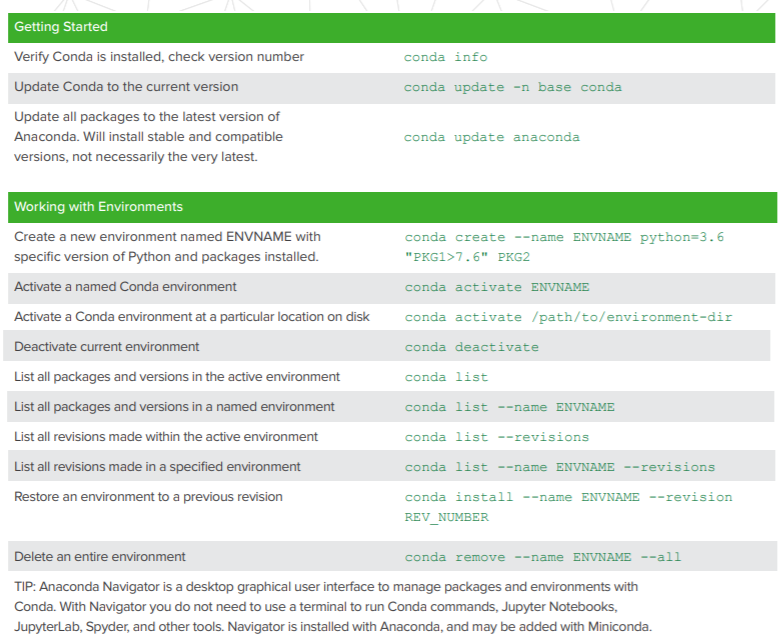
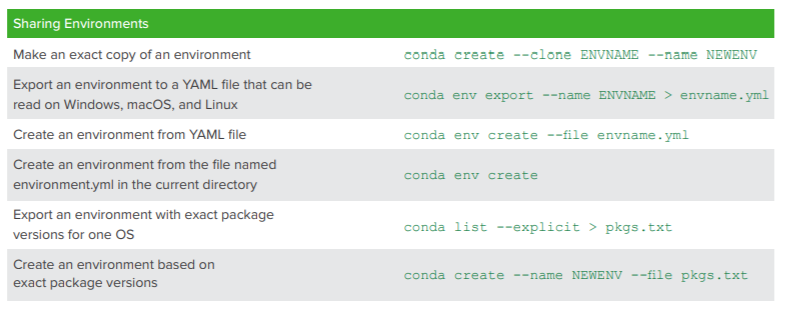
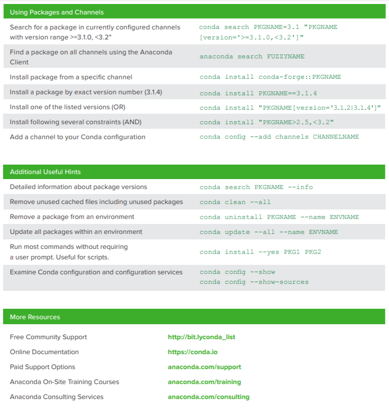

什么是Conda
Conda is an open source package management system and environment management system that runs on Windows, macOS and Linux. Conda quickly installs, runs and updates packages and their dependencies. Conda easily creates, saves, loads and switches between environments on your local computer. It was created for Python programs, but it can package and distribute software for any language.
- 管理包
包的安装、卸载、更新等，用conda操作十分方便。
如果conda装不了，那也只能乖乖地wget [软件安装网址]。
- 创建环境
就像把图书馆分为一个个书架，这些书架就是自己搭建的环境。这样一个环境坏了不会影响外面的环境，就像一个书架毁了不会把整个图书馆毁了。这个环境里安装这个环境所需要的包，就像一个标签为英语的书架就装英语相关的书。
创建的环境中可以调用外面的已经加入环境变量的变量，但是这中间有优先级的问题，比如说在环境中创建了一个叫rna的环境，然后安装Python版本为2.6，而在外面亦有Python版本为3.6，此时调用python命令，优先环境中安装的Python 2.6。
更详细见conda官网
环境搭建
安装conda
本人在自己的Windows上装Anaconda，在服务器上装miniconda。
Windows上装Anaconda
直接官网下载，当然能科学上网会快很多https://www.anaconda.com/distribution/
Anaconda 本质上是一个软件发行版，包含了 conda、Python 等 180 多个科学包及其依赖项，就是很完备嗯，我要做机器学习，Anaconda一装全现成比较省事憨憨。补充一句Python编译器用Pycharm好，总之我现在用得很顺。
- 服务器上装
miniconda
可以进入镜像网站寻找想要的版本：https://mirrors.tuna.tsinghua.edu.cn/anaconda/miniconda/
自然也可以直接conda官网miniconda：https://conda.io/miniconda.html
1 | wget -c https://mirrors.tuna.tsinghua.edu.cn/anaconda/miniconda/Miniconda2-latest-Linux-x86_64.sh |
配置
添加源+创建环境+安装包
1 | #添加bioconda软件源和国内软件源 |
安装python=2主要是由于conda依赖于Python，且要求版本
以下代码在rna环境中安装了sra-tools bwa gatk4 fastqc trim-galore cutadapt star hisat2 bowtie2 subread htseq multiqc samtools
1 | conda activate rna |
conda常用操作
环境创建、激活、退出、删除
1
2
3
4
5
6
7
8
9
10
11
12# 基于python2版本创建一个名字为rna的环境
conda create -n rna python=2
# 激活环境
source activate rna
# 或者
conda activate rna
# 退出环境
deactivate rna
# 删除环境
conda remove -n rna --all
# 或者
conda env remove -n rna查看所有创建的环境
1
2
3
4
5
6
7$ conda info -e
# conda environments:
#
base /public/home/huangsisi/miniconda2
crispr /public/home/huangsisi/miniconda2/envs/crispr
rna * /public/home/huangsisi/miniconda2/envs/rna
rna2 /public/home/huangsisi/miniconda2/envs/rna2管理包
1
2
3
4
5
6
7
8
9
10
11# 更新所有包，我在Windows上装完Anaconda后避免后续的麻烦就先在终端输入了该命令
conda upgrade --all
# 安装 bwa
# 加上 -y 是为了在提示yes/no时默认回答yes
conda install -y bwa
# 查看已安装的包
conda list
# 包更新
conda update bwa
# 删除包
conda remove bwaconda cheat sheet



s